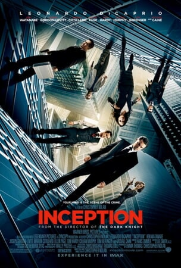

The Dark Knight

The Dark Knight is a superhero film based on the DC Comics character Batman. It follows Batman's struggle against the Joker, a psychopathic criminal wreaking havoc on Gotham City. The movie is known for its intense action sequences and compelling performances.
Release Date: July 18, 2008
Harry Potter and the Sorcerer's Stone

Harry Potter and the Sorcerer's Stone is the first installment in the Harry Potter film series, adapted from J.K. Rowling's novel. It introduces the magical world of Hogwarts School of Witchcraft and Wizardry and follows Harry Potter's journey as he discovers his true identity.
Release Date: November 16, 2001
Inception
Inception is a science fiction action film directed by Christopher Nolan. It explores the concept of shared dreaming, where a thief enters people's dreams to steal information. The movie is known for its mind-bending plot and stunning visual effects.
Release Date: July 16, 2010
The Matrix

The Matrix is a science fiction film set in a dystopian future where humans are unknowingly trapped in a simulated reality. It follows the story of Neo, who discovers the truth and joins a rebellion against the machines. The movie is famous for its groundbreaking visual effects and philosophical themes.
Release Date: March 31, 1999
Wonder Woman
Wonder Woman is a superhero film based on the DC Comics character. It tells the origin story of Diana Prince, an Amazonian warrior princess who leaves her island to help humanity during World War I. The movie showcases the strength and bravery of Wonder Woman.
Release Date: June 2, 2017
Interstellar

Interstellar is a science fiction film directed by Christopher Nolan. It follows a group of astronauts who travel through a wormhole in search of a new habitable planet for humanity. The movie explores themes of space exploration, time dilation, and the endurance of the human spirit.